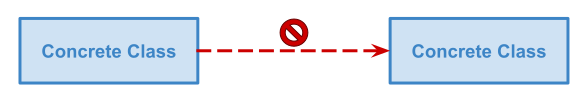
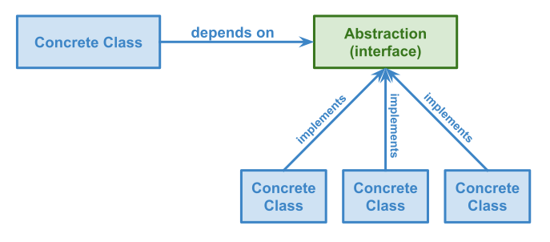
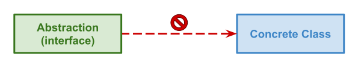

In this new blog post, I would like to speak about the dependency inversion design pattern. This pattern makes your code more modular and helps to improve codebase testability. It’s quite simple and super powerful.
What does this design pattern say?
A class should not depend on another one to avoid coupling them together. If a class is coupled with another one, it means you won’t be able to use the first one without the second one.

The classes should only depend on abstractions (e.g. interfaces). An interface can be implemented in several ways. It will make your code more modular because you can use a specific implementation depending on the context.

The interfaces should not depend on concrete implementations to avoid coupling them to another class.

How does this pattern improve testability?
Let’s see with a simple example how dependency inversion helps to make your code easily testable. The following class lets a cartographer add a marker on a map.
Note: I wrote an article about unit testing to help you to understand the main mistakes that make your codebase less testable. Here is the link https://arnolanglade.github.io/why-unit-testing-can-be-hard.html.
class AddMarkerToMap {
execute(marker) {
const repository = PosgresqlMaps.getInstance()
const map = repository.get(marker.mapId)
map.addMarker(
marker.name,
marker.longitude,
marker.latitude,
)
repository.save(map)
}
}
This class uses a singleton PosgresqlMaps.getInstance() to retrieve an instance of the PosgresqlMaps repository. This repository is in charge of saving map data into a PostgreSQL database. The problem is that we cannot run this code without a working database. This class is coupled to the PosgresqlMaps repository.
We don’t want to use IO (your tools like a database) when we unit-test a piece of code because we want to avoid setting up any tools to a short feedback loop. We only want to check if a section of the application behaves as expected. We don’t want to test if the map data is well stored.
Using the dependency inversion pattern will help us to remove the coupling between AddMarkerToMap and PosgresqlMaps and make it easy to unit test.
First, we need to remove the coupling between both classes. We will create an abstraction to define how to retrieve and save maps in the application.
interface Maps {
get(mapId: MapId): Promise<Map>;
save(map: Map);
}
Note: When I cannot use a business term to name a repository I pluralize the name of my aggregate to name it. That’s why I name it Maps because I want to handle map aggregate persistence.
Now, we can create as many implementations as we need. We will create a dedicated implementation for testing purposes. It will only keep it in memory which will avoid using a database.
class InMemoryMaps implements Maps {
private maps: Record<MapId, Map>;
async get(mapId: MapId): Promise<Map> {
return this.maps[mapId];
}
async save(map: Map): Promise<void> {
this.maps[map.id()] = map;
}
}
Note: I name all implementations with a prefix depending on what they are. If a repository uses a database, I will prefix the class with the name of the database. When I create an implementation for testing purposes, I use the InMemory prefix.
As we want to create a working application, we will create an implementation which uses a database for the production environment.
class PosgresqlMaps implements Maps {
// …
async get(mapId: MapId): Promise<Map> {
const map = await this.client.query(
`SELECT * FROM maps WHERE id = ${mapId}`,
);
return new Map(map);
}
async save(map: Map): Promise<void> {
await this.client.query(
`INSERT INTO maps VALUES (${map.toState()})`
);
}
}
We need to refactor a bit the AddMarkerToMap class to be able to inject an implementation of the Maps interface.
class AddMarkerToMap {
constructor(private maps: Maps) {}
execute(marker) {
const map = this.maps.get(marker.mapId)
map.addMarker(
marker.name, marker.latitude, marker.longitude
)
this.maps.save(map)
}
}
Finally, we can test this class because we can instantiate the AddMarkerToMap class with the InMemoryMaps class. This implementation helps us to test this class because it does not use any IO. Here, we don’t want to test if the data are well persisted but we want to test the business logic of marker addition on a map.
it('adds a new marker to the map', () => {
const maps = InMemoryMaps()
new AddMarkerToMap(maps).execute({
mapId: 'mapId', name: 'Le Sunset',
latitude: 23.252353245, longitude: 43.5432563457
})
expect(maps.get('mapId')).toEqual(
new Map(
new Marker('Le Sunset', 23.252353245, 43.5432563457)
)
)
})
Note: We don’t use a unit test to ensure the application uses its tools well. We use integration tests for this. For instance, if we want to ensure that a repository works as expected.
Thanks to my proofreader @LaureBrosseau.